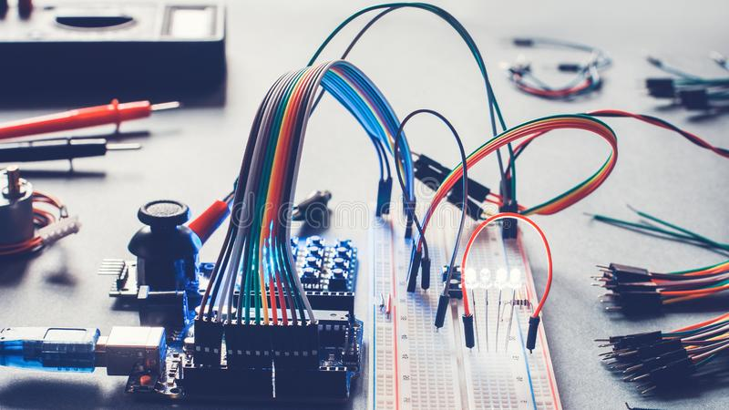
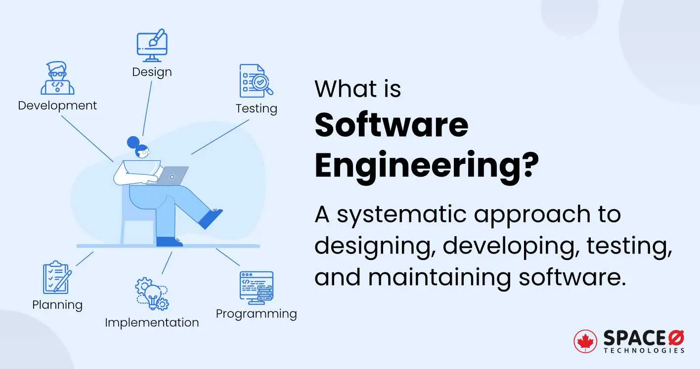

reference
library of applied physics
PHYSICS
The course contents are included below
- Mechanics and Properties of Matter
- Waves, Oscillations and Advance Mechanics
- Classical Mechanics and Relativity
- Quantum Mechanics
- Statistical Mechanics
- Electricity and Magnetism
- Classical Electrodynamics
- Electronics
- Solid State Physics
- Optics
- Lasers and Protonic
- Thermal Physics
- Atomic and Molecular
- Nuclear and Particles
- Material and Nanotechnology
- Astrophysics
- Computational Physics
- Mathematical Physics
- Modern Physics
- Engineering Physics

MECHANICAL ENGINEERING
The course contents are included below
- Mechanical Engineering
- Engineering Mechanics
- Mechanics of Solids
- Strength of Material
- Mechanics of Machinery
- Fluid Mechanics
- Fluid Machinery
- Computational Fluid Mechanics
- Engineering Thermodynamics
- Heat Transfer
- Heat Transfer Equipment Design
- Machine Design
- Internal Combustion Engine
- Combustion and Pollution
- Noise and Vibration
- Mechanical Measurement
- Ventilation and Air Condition
- Fire Safety Engineering
- Theory of Structure
- Mechatronics
- Gas Dynamics and Turbo Machinery
- Fluid Machine Design
- Thermo-Fluid System
- Fluidic

AERONAUTICAL ENGINEERING
The course contents are included below
- Aeronautical Engineering
- Aircraft Aerospace System
- Applied Aerodynamics
- High-Speed Aerodynamics
- Flight Dynamics
- Rotor-Dynamics
- Aircraft Structure Analysis
- Aerospace Material
- Aerospace Vehicle Design
- Aerofoil
- Propulsion and Gas Turbine
- Aircraft Machinery
- Structural Vibration and Elasticity
- Aircraft Stability and Control
- Aircraft Performance
- Avionic Technology
- Space System Engineering
- Spacecraft
- Drone Technology

NAVAL ARCHITECTURE AND MARINE ENGINEERING
The course contents are included below
- Marine Engineering
- Naval Architecture
- Hydrostatics and Stability
- Marine Hydrodynamics
- Dynamics of Marine Vehicles
- Ship Structure
- Theoretical Ship Design
- Theory of Hydrofoils
- Resistance and Propulsion of Ship
- Marine Engines and Fuels
- Auxiliary Machinery
- Performance, Motion and Control
- Navigation and Maritime Regulations
- Compute rAided Shp Production
- Ship Construction
- Offshore Structure

ELECTRICAL AND ELECTRONICS ENGINEERING
The course contents are included below
- Electrical Engineering
- Electrical Circuits
- Electrical Machine
- Energy Conversion
- Electrical Properties of Materials
- Electrical Service Design
- Engineering Electromagnetics
- Power System
- Power Plant Engineering
- Power System Protection
- Power System Reliability
- Power System Operation and Control
- High Voltage Engineering
- Measurement and Instrumentation
- Signals and Linear System
- Electronics
- Power Electronics
- Solid State Device
- Analog Integrated Circuit
- Processing and Fabrication
- Compound Semiconductors
- Semiconductor Device Theory
- Optoelectronics
COMMUNICATION ENGINEERING
The course contents are included below
- Communication Theory
- Analog Communication
- Digital Communication
- Electromagnetic Waves
- Microwave Engineering
- Random Signal Processing
- Telecommunication
- Optical Communication
- Satellite Communication
- Mobile Communication
- Antennas
- Television Engineering
- Wireless Communication
- Radar Communication
- Communication Circuits Design

DIGITAL ELECTRONICS AND COMPUTER SCIENCE
The course contents are included below
- Digital Electronics and Pluse Techniques
- Microprocessor and Microcontrollers
- Digital System Design
- Digital Logic Design
- Computer Architecture
- VLSI Design
- Computer Interfacing
- Embedded System
- Computer System
- Discrete Mathematics
- Theory of Computation
- Computer Graphics
- Computer Network
- Wireless Network
- Data Communication
- Artificial Intelligence
- Mathematical Analysis for CS
- Basic Graph Theory
- Computational Geometry
- Algorithm Engineering
- Simulation and Modeling
- Fault Tolerant System
- Computer Vision
- Robotics

SOFTWARE ENGINEERING
The course contents are included below
- Structured Programming
- Object-Oriented Programming
- Data Structure
- Algorithm
- Numerical Method
- Combinatorial Optimization
- Assembly Language
- Database
- Operating System
- Compiler
- Information System
- Software Engineering
- Basic Multimedia Theory
- Digital Image Processing
- Machine Learning
- Pattern Recognition
- Parallel Computing
- Distributed System
- Computer Organization
- Software Architecture
- System Analysis and Design
- Software Requirements and Metrics
- Software Testing and Quality Assurance
- Human Computer Interaction
INDUSTRIAL AND PRODUCTION ENGINEERING
The course contents are included below
- Industrial Engineering
- Manufacturing Process
- Production Process
- Product Design
- Quality Management
- Machine Shop
- Machine Tools
- CAD / CAM
- Foundry and Welding
- Metal Cutting
- Material Handling and Maintenance
- Engineering Materials
- Composite Materials
- Metallic Materials
- Plastics Materials
- Industrial Control

CIVIL AND ARCHITECT
The course contents are included below
- Civil Engineering
- Analytical Mechanics
- Soil Mechanics
- Surveying
- Structural Analysis
- Structural Design
- Design of Concrete Structure
- Design of Steel Structure
- Foundation Engineering
- Geology and Geomorphology
- Environmental Engineering
- Transportation Engineering
- Details of Construction
- Hydrology and Irrigation
- Architectural Design and Planning
ENGINEERING FUNDAMENTALS AND TECHNOLOGIES
The course contents are included below
- Engineering Fundamental
- Engineering Ethics
- Engineering Economics
- Engineering Drawing
- Engineering Research
- Numerical Analysis
- Finite Elements Method
- Control System Engineering
- Renewable Energy
- Nuclear Engineering
- Petroleum Engineering
- Optical Engineering
- Plasma Physics
- Biomedical Engineering
- Organic and Inorganic Chemistry
- Engineering Chemistry
- Calculus
- Differential Equation
- Coordinate Geometry
- Vector Analysis and Complex Variable
- Matrices
- Fourier and Laplace Transforms
- Statistics and Probability
- Engineering Mathematics

UI/UX DESIGN AND DEVELOPMENT
The course contents are included below
- Design Theory
- Design Process
- UI Design
- UX Design
- Figma
- Adobe XD
- Adobe Photoshop
- Adobe Illustrator

BUSINESS ADMINISTRATION
The course contents are included below
- Fundamental of Business
- Financial Accounting
- Management Accounting
- Financial Management
- Legal Environment of Business
- International Business Environment
- Organizational Behavior
- Business Communication
- Principles of Management
- Organization
- Human Resource Management
- Marketing Management
- CR Management
- Operation Management
- Strategic Management
- Entrepreneurship
- Business Ethics
- Managerial Economics
- Business Research
- Quantitative Analysis
- Business Analytics
- Information System